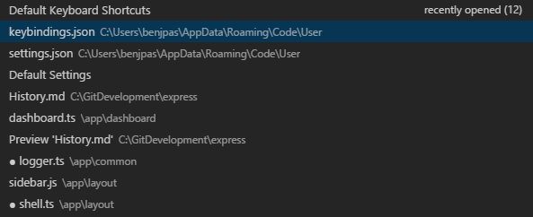
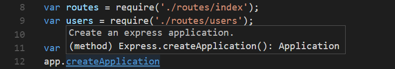
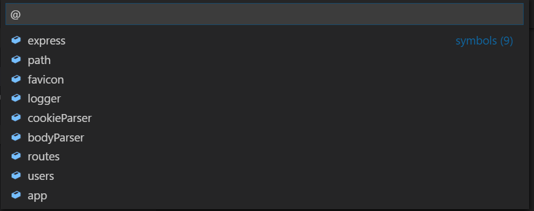
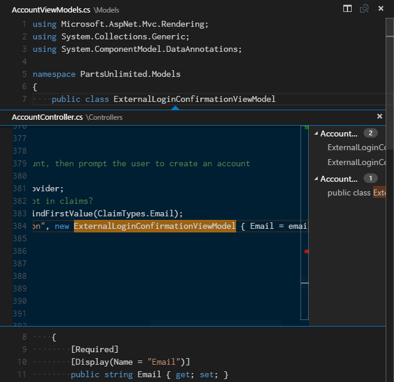
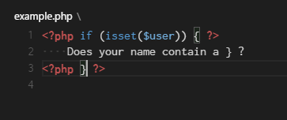
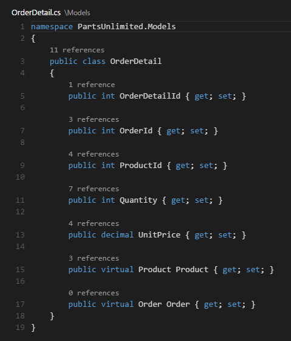
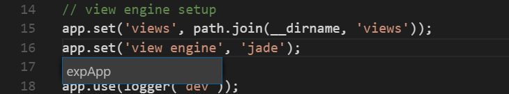
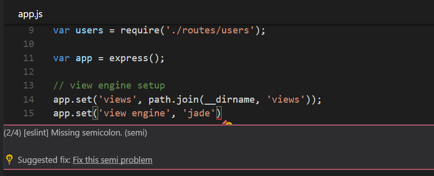

Visual Studio Code has a high productivity code editor which, when combined with programming language services, gives you the power of an IDE and the speed of a text editor. In this topic, we’ll first describe VS Code’s language intelligence features (suggestions, parameter hints, smart code navigation) and then show the power of the core text editor.
Quick File Navigation
The Explorer is great for navigating between files when you are exploring a project. However, when you are working on a task, you will find yourself quickly jumping between the same set of files. VS Code provides two powerful commands to navigate in and across files with easy-to-use key bindings.
Hold Ctrl and press Tab to view a list of all files open in an editor group. To open one of these files, use Tab again to pick the file you want to navigate to, then release Ctrl to open it.

Alternatively, you can use ⌃- (Windows Alt+Left, Linux Ctrl+Alt+-) and ⌃⇧- (Windows Alt+Right, Linux Ctrl+Shift+-) to navigate between files and edit locations. If you are jumping around between different lines of the same file, these shortcuts allow you to navigate between those locations easily.
Tip: You can open any file by its name when you type ⌘P (Windows, Linux Ctrl+P) (Quick Open).
Go to Definition
If a language supports it, you can go to the definition of a symbol by pressing F12.
If you press Ctrl and hover over a symbol, a preview of the declaration will appear:

Tip: You can jump to the definition with Ctrl+Click or open the definition to the side with Ctrl+Alt+Click.
Go to Type Definition
Some languages also support jumping to the type definition of a symbol by pressing . This will take you to the definition of the type of a symbol.
Go to Implementation
Languages can also support jumping to the implementation of a symbol by pressing ⌘F12 (Windows, Linux Ctrl+F12). For an interface, this shows all the implementers of that interface and for abstract methods, this shows all concrete implementations of that method.
Go to Symbol
You can navigate symbols inside a file with ⇧⌘O (Windows, Linux Ctrl+Shift+O). By typing : the symbols will be grouped by category. Just press Up or Down and navigate to the place you want.

Open symbol by name
Some languages support jumping to a symbol across files with ⌘T (Windows, Linux Ctrl+T). Just type the first letter of a type you want to navigate to, regardless of which file contains it, and press Enter.

Peek
We think there’s nothing worse than a big context switch when all you want is to quickly check something. That’s why we support peeked editors. When you execute a Find All References search (via ⇧F12 (Windows, Linux Shift+F12)), or a Peek Definition (via ⌥F12 (Windows Alt+F12, Linux Ctrl+Shift+F10)), we embed the result inline:

You can navigate between different references in the peeked editor and make quick edits right there. Clicking on the peeked editor filename or double-clicking in the result list will open the reference in the outer editor.
Tip: Additionally, the peek window is closed if you press Escape or double-click in the peek editor region. You can disable this behavior with the
editor.stablePeeksetting.
Bracket matching
Matching brackets will be highlighted as soon as the cursor is near one of them.

Tip: You can jump to the matching bracket with ⇧⌘\ (Windows, Linux Ctrl+Shift+\)
Reference information
Some languages like C# support inline reference information, that is updated live. This allows you to quickly analyze the impact of your edit or the popularity of your specific method or property throughout your project:

Tip: Directly invoke the Find All References action by clicking on these annotations.
Tip: Reference information shown in CodeLens can be turned on or off through the
editor.codeLenssetting.
Rename symbol
Some languages support rename symbol across files. Simply press F2 and then type the new desired name and press Enter. All usages of the symbol will be renamed, across files.

Errors & Warnings
Warnings or Errors can be generated either via configured tasks, by rich language services, or by linters, that constantly analyze your code in the background. Since we love bug-free code, warnings and errors show up in multiple places:
- In the status bar, there is a summary of all errors and warnings counts.
- You can click on the summary or press ⇧⌘M (Windows, Linux Ctrl+Shift+M) to display the PROBLEMS panel with a list of all current errors.
- If you open a file that has errors or warnings, they will be rendered inline with the text and in the overview ruler.

Tip: To loop through errors or warnings in the current file, you can press F8 or ⇧F8 (Windows, Linux Shift+F8) which will show an inline zone detailing the problem and possible code actions (if available):

Next Steps
Now that you know how the editor works, time to try a few other things…
- Intro Video - Code Editing - Watch an introductory video on code editing features.
- User Interface - In case you missed a basic orientation around VS Code.
- Key Bindings - Learn how to modify key bindings to your preference.
- Debugging - This is where VS Code really shines.